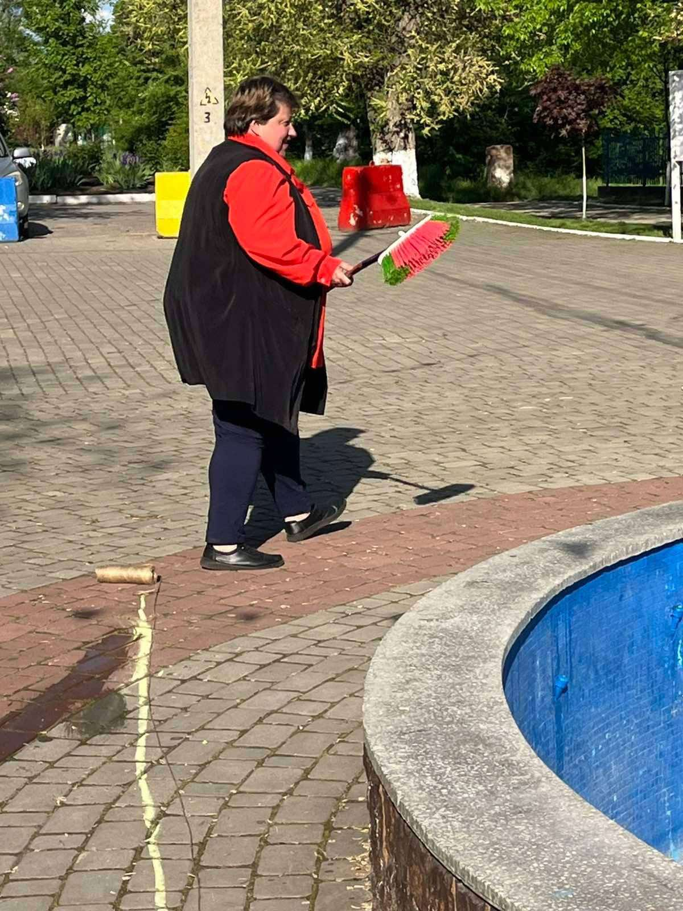
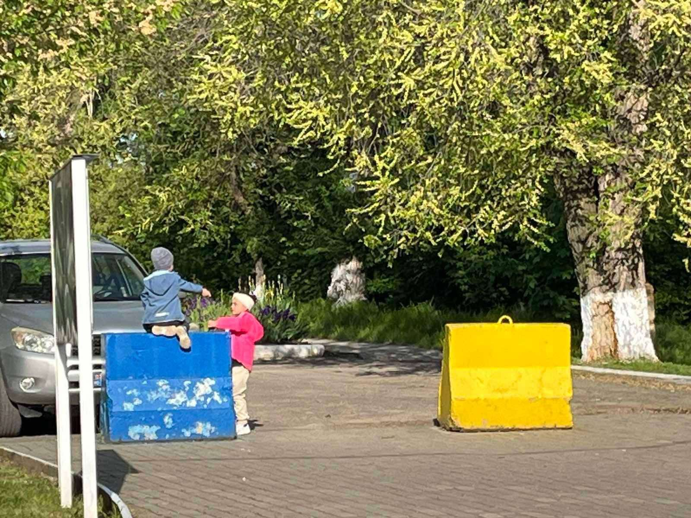
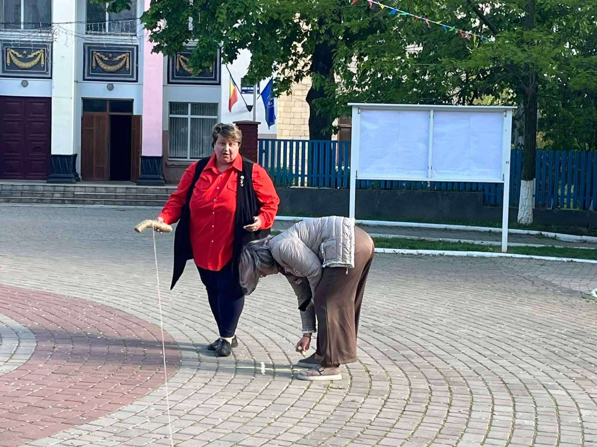
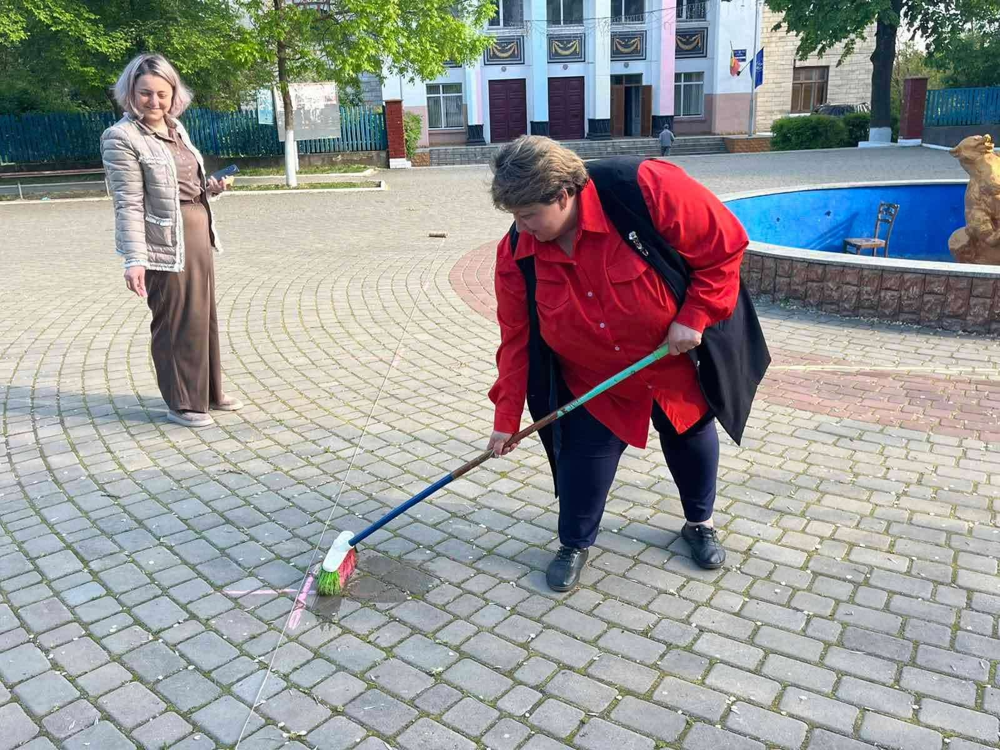

FAMILIA - Inimi Unite, Viitor Împlinit!
Ghindești, sunteți gata? Mâine, 15 mai, ne vedem să sărbătorim împreună Ziua Familiei! 🎉
Pregătirile sunt pe ultima sută de metri și, după cum vedeți în imagini, la Gimnaziul „Mihai Eminescu” e mobilizare generală:
Măsurăm pavajul cu precizie milimetrică pentru ca totul să iasă „la linie”. 📏
Măturile „sfârâie”, iar curățenia e literă de lege. 🧹
Până și statuile au fost verificate, să nu care cumva să lipsească de la eveniment. 🐻
Cei mici sunt deja la post, gata de distracție. 👧👦
Am pus mână de la mână (și mătură de la mătură) ca să vă primim cu drag! Ne vedem mâine să unim inimi și să construim amintiri. ❤️
Nu uitați: mâine, 15 mai, marea sărbătoare!



